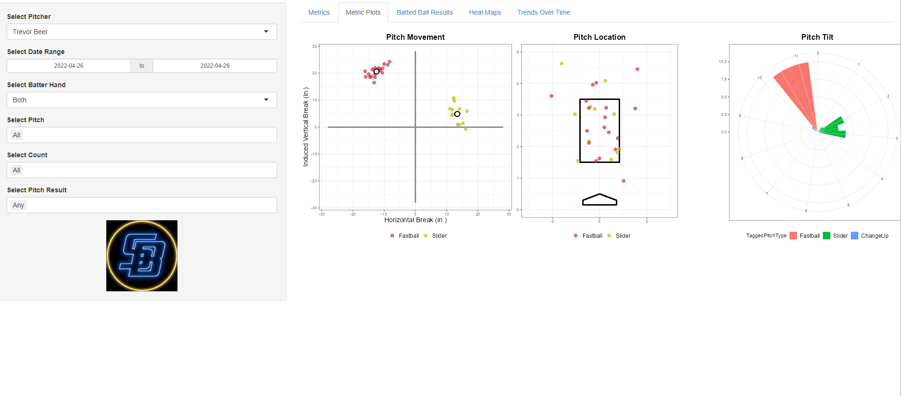
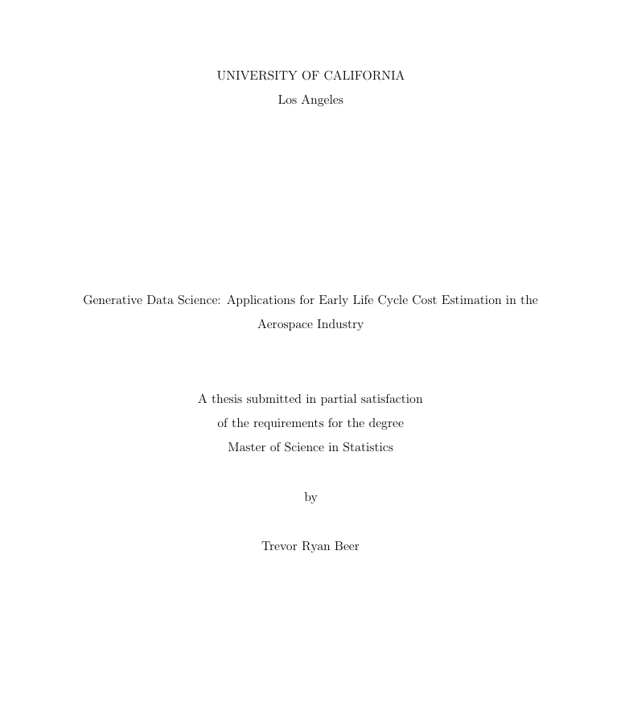

This project was born from my work as a Data Analyst with the UCLA Baseball team during the 2022-2023 academic year. Using Trackman data on pitched and batted balls,
I created an RShiny application which aggregates important metrics, creating tables and visualizations which convey relevant information (DEMO).
This repository contains a PDF and PPT file containing the contents of my final presentation concluding my Academic Part-Time (APX) employment with NASA's
Jet Propulsion Laboratory.

Research conducted for my Master's Thesis in Statistics at UCLA. I investigate the potential and ability of different synthetic data generation schemes
in the low data paradigm, with ties to the Aerospace industry and my work at NASA JPL.